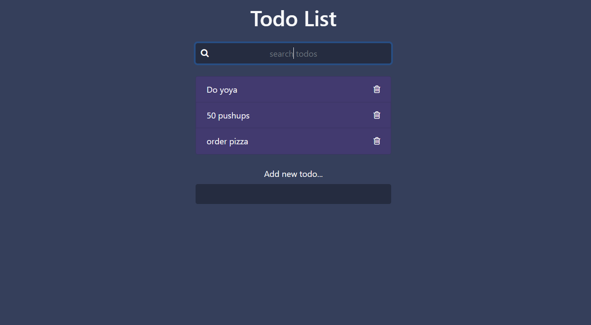

01. Library Book Management System Database
- Description: The Library Book Management System Database is designed to manage all aspects of a library's operations, including books, issues, returns, and student records efficiently and effectively. Its primary purpose is to streamline and enhance the library's functionality, ensuring that the library staff can provide a seamless and productive experience for both library users and administrators.
- Date Completed: 22 October 2023
- Technologies Used: MS Access, MySQL, and SSMS
02. CalcPlus
- Description: CalcPlus, a straightforward calculator app designed for performing fundamental arithmetic operations with ease. With a simple interface, it allows users to add, subtract, multiply, and divide numbers effortlessly.
CalcPlus simplifies calculations by providing a user-friendly platform for basic mathematical operations.
- Date Completed: 28 July 2023
- Technologies Used: HTML, CSS, JavaScript
03. WeatherScope
- Description: WeatherScope, your go-to app for instant weather forecasts in multiple locations worldwide. With a user-friendly interface, access real-time weather conditions by simply entering the desired city or coordinates.
Get detailed, up-to-date forecasts, including temperature, humidity and wind speed all presented in an easy-to-understand format.
- Date Completed: 20 August 2023
- Technologies Used: HTML, CSS, JavaScript
04. QuickLister
- Description: QuickLister allows users to input tasks, which are promptly displayed as a list, mimicking digital sticky notes.
It offers the flexibility to delete any listed item, empowering users with control over their task list.
With its user-friendly interface and straightforward functionality, QuickLister simplifies task organization,
making it a go-to tool for managing daily tasks with ease.
- Technologies Used: HTML, Bootstrap, JavaScript

<
>